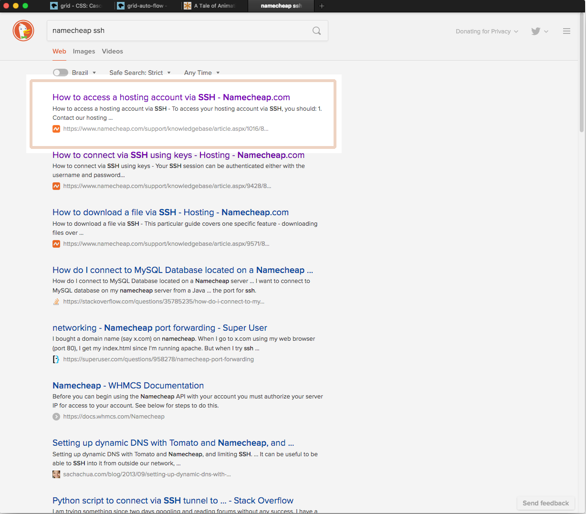
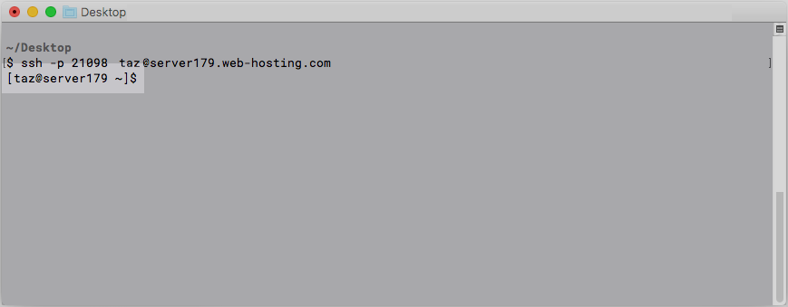
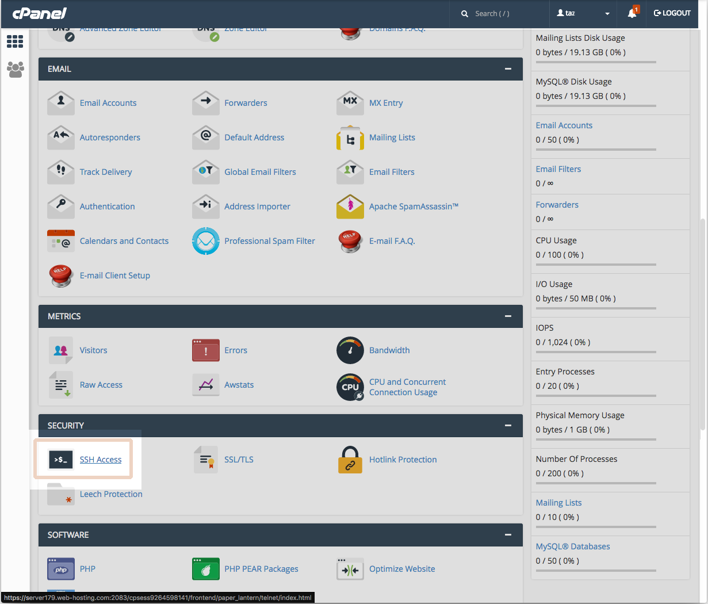
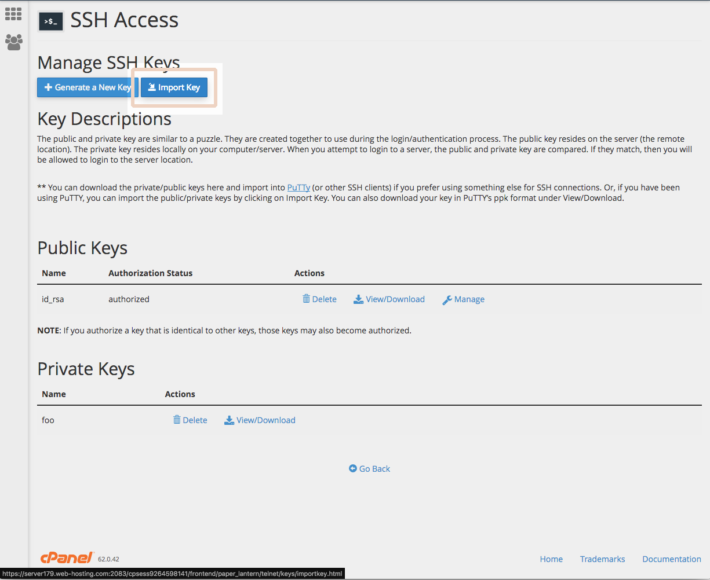
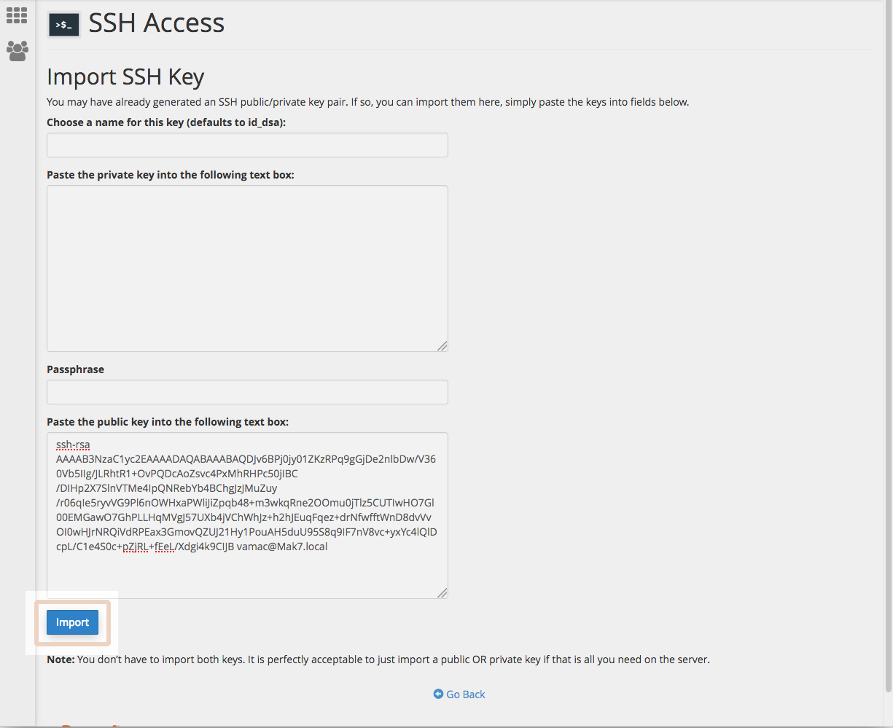
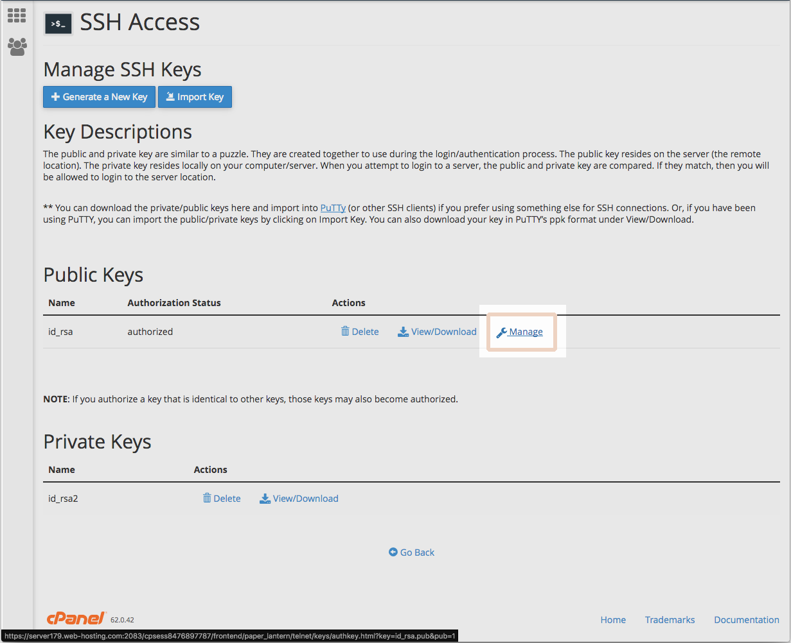
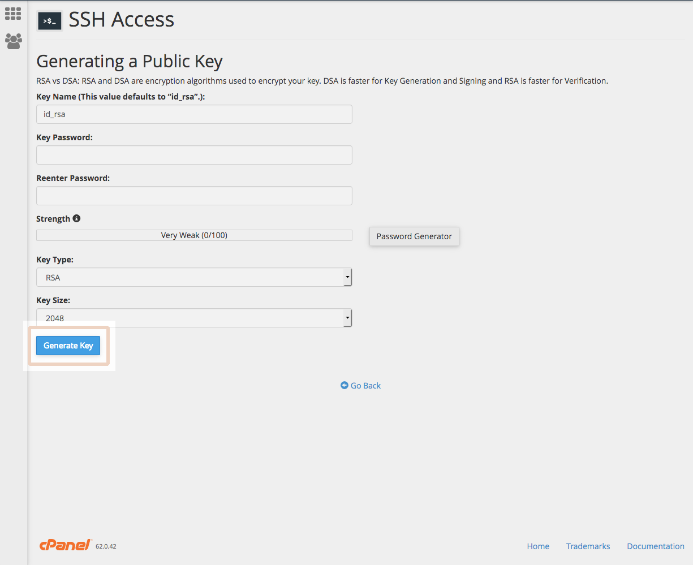
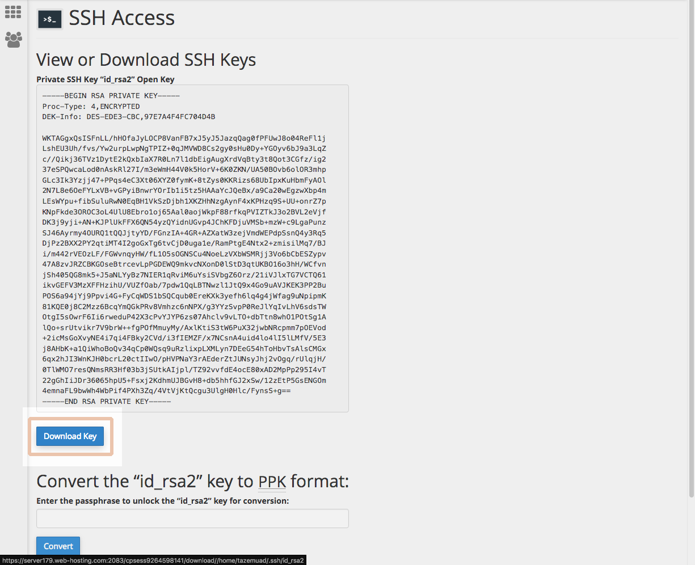
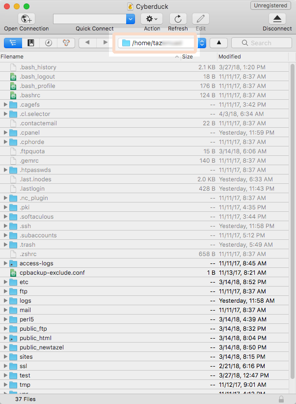
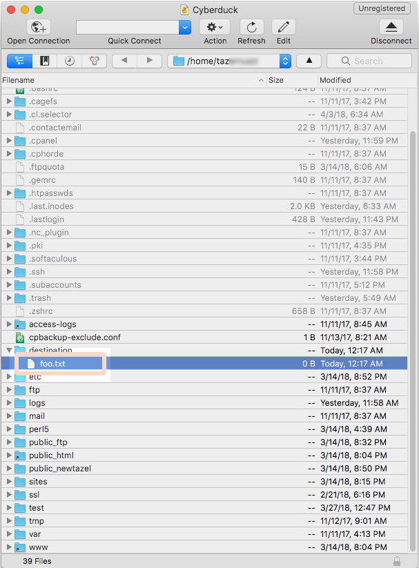

The first way I learned to upload a site over to a server was using FTP. And FTP is good, it has many great free programs out there.
It's a good way to learn how sites go from local files to being available online.
It even is easier to relate to other uploads you might have done before, because the interface is familiar.
There are, however, faster ways to get sites live, and to people doing many uploads a day to test things, this saves a lot of time.
The problem with FTP is that it isn't secure (you could SFTP), it's also slow, and using a graphical computer program is even slower. The dragging and clicking adds to the slowness, and we can automate that, so why not?
Get rid of typing passwords, too? No, it isn't back breaking to do it. Optionally, it's possible to make things even faster using a shell alias or a script.
I have one over at Github.
I tried to write a post which explains basic concepts, so someone kinda new to this stuff or just curious about this won't be gaping hopelessly.
And I think it makes a better post to include explanations, makes me feel like I did a better job.
If you've used FTP in web development before you're good.
Ok. What is the command line?
It's a tool we'll be using to set this up, and I need to write a post in detail about it later, because the command line is this amazingly useful cool tool (at least I think so.)
But for now it'll suffice to say a few basics:
- The command line and CLI mean roughly the same thing.
- CLI means Command Line Interface. Contrast with: Graphical User Interface.
- The terminal is a program where we use the command line, the window.
- We'll be typing commands in a terminal getting some response back from the computer.
- It's not programming and does not require programming knowledge to use.
- Just like anything else, it requires some persistence to pick up.
- Seen as a
h4ck3r thing. It really is not.
- Much faster than a GUI for repetitive work.
- Slower than a GUI for non-repetitive tasks.
Knowing both allows you to play to their strengths.
Shell and scripts?
Shell is a type of program that is the heart of the CLI experience, much like windows for a GUI.
The job of the shell is to understand the commands typed in the terminal.
We'll use a shell running Bash, the most popular shell out there.
Bash shell scripting is programming a bunch of commands to run together.
This is actual programming, but not required to upload a site using rsync and ssh.
What is SSH?
It stands for Secure Shell. It's a connection and security solution to allow access to a remote computer.
After we set it up, we'll let rsync do the SSH for us. Rsync is a really nice file transfer program with multiple uses.
It can copy files locally on your computer or to another one (our case). It can SSH for us, it's smart and doesn't transfer repeated data, saving time and bandwidth,
it's resilient and has a million options.
so...
We'll setup SSH access into the web host and upload a site using rsync, then we'll go over some ways reduce our work even further using bash.
Before you begin
Are you on Windows?
I'm not keen on Windows support for SSH, rsync and bash, but here are a few ideas:
Sorry to not support Windows further. The minimum you need on your system is rsync. On Mac and Linux you should have no problems.
Do you have FTP upload working already?
This is important because it means you have a username and password, and a way to get in touch with your web host.
They usually e-mail you this information right after you purchase the hosting plan.
You need a web host to log into, obviously.
Step 1: Making sure SSH works
We need to make sure your hosting provider accepts SSH. The pieces of info needed:
- Their policy for SSH.
- Port number.
- Username, likely the same used for FTP.
- Servername, likely the same used for FTP.
Each provider may have a different policy in place to allow SSH access, so we'll be googling for it. SSH is known and common in web development so we should find the info right away.
I'm using namecheap right now, so I googled for:

Try googling for something similar, using your web host in place of mine, obviously. I landed on a knowledge base article with further instructions saying I need to contact support to enable SSH.
I logged into my account and opened a support ticket saying:
I would like to access the account using SSH and I am opening a ticket as instructed here:
https://www.namecheap.com/support/knowledgebase/article.aspx/1016
They replied in less than 10 minutes with an e-mail:
Hello Raphael,
Thank you for contacting the Namecheap Support Team!
We are glad to let you know, that Shell SSH access has been enabled for your account. Connection is available on the server via port 21098.
You can find more information about how to access your hosting account via SSH at:
http://www.namecheap.com/support/knowledgebase/article.aspx/1016/89/how-to-access-my-hosting-account-via-ssh
Feel free to use server179.web-hosting.com as the servername.
Please check it and let us know if you need further assistance.
We are looking forward to hearing from you.
They even put other info in the email, the server and port. With just this e-mail I was good to go.
- Their policy for SSH
- Authorized
- Port number
- 21098
- Username
- I was hoping it would be the same.
- Servername
- server179.web-hosting.com
Using SSH on the terminal
With the information, let's SSH. We need a terminal for that. On Linux your terminal name depends on your distro, but is in your programs menu. On MacOS it's called Terminal and is inside Applications Utilities.
Heads up:
- All code samples of shell commands are preceded by a $.
- Don't actually type that!
Type only: cal
cal
Okay, I feel better now. Back to SSH.
Open your terminal and type:
ssh
Expected output:
This means a SSH program is available and working. Good.
Notice the prompt?
~/Desktop
$
The command we need works like below. Hover or tap on it to show examples of information you could enter. Tap outside to hide.
ssh -p @
Go ahead and enter the command with your info. Type the FTP password.
Expected output:

Notice the prompt changed?
[taz@server179 ~]$
This means it worked and we're logged into the web host and any commands will be executed on the remote computer.
To test, type ls and it should list the base directory of your hosting storage.
We're done seting up SSH.
Go ahead and logout with Ctrl + D, this should bring you back to your computer.
Should login fail, or the program become unresponsive, the kill shorcut is Ctrl + C.
Having trouble?
This is something you need to work with your web hosting provider. If the google search turned up nothing good or just incomplete, I'd just e-mail them or contact support asking something bold like:
What command do I type in my terminal to SSH into my account?
That should at worst give you information, and at best the SSH command already figured for you. For problems with SSH you can use a similar approach, or just youtube.
Step 2: Skipping the password
Let's type passwords the minimum necessary. We have SSH keys.
What are SSH keys?
A secure, faster authentication method where we don't type passwords.
It's compromised of a pair of keys, each key being roughly a fingerprint saved to a cryptographed file.
- Public key
- It works like a padlock, it's publically visible on the internet.
- Private key
- The padlock's key, you don't share it with anyone.
When you try to login, the keys are compared and they must match.
The only match to your public key is your own private key.
There are two ways to create the keys:
Generating SSH keys yourself
This method is faster.
Type on terminal:
ssh-keygen
It will ask you for one thing at a time, follow the instructions.
Leave the save location on default and give it a password.
Beware:
- The default save path is
~/.ssh which is a hidden directory. Should you browse to it with a filemanager, enable hidden files to see it properly.
- The default name for the private key is
id_rsa and public id_rsa.pub. Should you change the name, change the commands too.
- Private key default path
~/.ssh/id_rsa- Public key default path
~/.ssh/id_rsa.pub
Expected output:
All good, now we upload the public key to the host keeping the private to ourselves.
Login at your CPanel, or equivalent software you use to manage your hosting, and look for a SSH menu item.

Import key option.

It wants you to paste your key in. We'll only be providing the public key, leave the private blank. You can browse to your public key file, open on a text editor and copy it, or copy it with terminal commands.
MacOS
cat ~/.ssh/id_rsa.pub | pbcopy
Linux
cat ~/.ssh/id_rsa.pub | xclip -selection c
Paste it.

After uploading we need to authorize the key.
Under public keys, click manage.

Click on authorize.
All done.
Generating SSH keys with your host
Another way is to do it on the control panel.
On the SSH menu, choose 'generate a new key', right next to 'import'.
Fill in the information.

You should now have a pair of keys.
Under private keys, click 'view/download', right next to 'import'. Then 'download key'.

Private keys stay in our machines and normally live on ~/.ssh.
So we need to move this new key there.
- You may need to make the directory:
-
mkdir ~/.ssh
-
Then move
id_rsa into ~/.ssh using your filemanager.
Or run:
mv ~/.ssh/id_rsa
Using the key
Having authorized the public key on the host and having the private key on ~/.shh, the command becomes:
ssh -p -i ~/.ssh/id_rsa @
Just add the -i ~/.ssh/id_rsa bit to the previous command and run it.
- It will ask to confirm the host authenticity, hit yes.
- It will ask for the key's password, provide it.
- MacOS - If you get a keychain pop-up, say yes to remember the password.
...you should have logged in! Just like before.
When you're done logout by hiting Ctrl + D.
Saving the key's password
We actually just exchanged one password for another... Now we'll save the key's password.
If your key has a custom name you need to provide its path to the ssh-add command.
Linux
eval $(ssh-agent)
ssh-add
MacOS
You must have accepted the keychain pop-up.
/usr/bin/ssh-add -A
Additional step for MacOS versions after Sierra 10.12.2
Create a new empty file named config on ~/.ssh. Copy-paste the following lines:
Host *
AddKeysToAgent yes
UseKeychain yes
Goodbye passwords. You also don't need to add -i ~/.ssh/id_rsa to any SSH command anymore and this will persist through reboots.
Step 3: Setting up Rsync
You definitely already have a version pre-installed on your system.
A basic rsync command copies source to destination:
rsync
You can specify options:
rsync
To learn more: man rsync.
Just know that I wasn't kidding when I said a million.
We don't need options yet, so leave it blank.
To have rsync SSH for us, we'll need to find the path of your home directory on the web host. This can be as simple as a login into your FTP and looking at the current directory:

Or you can SSH into the host and type:
pwd
It will reply to you with the path we're looking for. Let's call this path hosthome. It probably contains your username on it, something like /home/heyzor if your username is heyzor.
Testing it
Let's test sending something over to the host.
Find a test file. Example:
- Filename
- foo.txt
- Path
- ~/Desktop/foo.txt
Fill in your information and execute:
rsync
-e "ssh -p
"
@:/
Careful:
- Make sure the destination directory exists on the host, either create it or use an existing one. Rsync will give you an error if you use a directory that doesn't exist.
If you see no output, that's good. Use SSH or your FTP to verify the file arrived on the host.
Alright!

Time for a site upload
Rsync can easily send a whole directory to another directory on your host. Yep, the whole site with css and js and any other sub directories you might have, piece of cake.
To have it work with directories I use roughly these options:
- --recursive
- Send sub directories along with their contents
- --update
- Skip files that are newer on the destination
- --inplace
- Only send new data for modified files
- --no-relative
- Don't use relative path names
rsync --recursive --update --inplace --no-relative
-
Caveat: when telling rsync about directories you want it to send, end their names with a forward slash /
- ~/Desktop/test-site
- ~/Desktop/test-site/
Try it:
rsync --recursive --update --inplace --no-relative
-e "ssh -p
"
@:/
Okay. By now, you should be either sold on this, or not even reading anymore. If you chose a directory on the host actually linked to a domain, you just upload a site. It should be live. Isn't that cool? Fast?
I get it, it might look complicated, but hey, once it's figured out:
Just copy-paste it over and over.
Or do even better:
step 4: Optimize with bash
I think the bare minimum is to alias the rsync command to something smaller. That way we can type uploadSite, and it uploads the site!
To create an alias use:
alias
=""
Then type foo to run echo this is an alias
Should you want to remove an alias:
unalias
To make the alias permanent we must add it to one of the shell config files, like ~/.bashrc.
Open ~/.bashrc in a text editor.
-
MacOS - You may use
~/.bash_profile if you have no ~/.bashrc
Add the alias line to the file:
alias uploadSite="rsync --recursive --update --inplace --no-relative -e "ssh -p 21098" ~/Desktop/test-site/ heyzor@server179.web-hosting.com:/home/heyzor/destination/test-site/"
To cause the shell to read the file, it needs to restart. To do that you can restart the terminal, or switch to a new tab.
And that's it.
A function
The alias is simple and great, but you would have to edit that line on your shell file everytime you change the site you want to upload, because the source and destination directories are hardcoded.
Here's a trivial function to deal with that problem:
uploadSite() {
#this function takes 2 parameters
#1 - source directory
#2 - destination directory
#source is sent to destination via rsync SSH
#check enough arguments were provided
if [ "$1" == "" -o "$2" == "" ]; then
echo "Please provide two arguments"
echo "1 - source directory"
echo "2 - destination directory"
echo "source is sent to destination via rsync SSH"
return
fi
#rsync call
rsync --recursive --update --inplace --no-relative -e "ssh -p 21098" "$1" heyzor@server179.web-hosting.com:/home/heyzor/"$2"/
}
It essentially just checks if you passed it non-empty names, and substitutes them into the rsync command. Please make sure the names you pass as arguments are valid!
Paste it on your init file, then restart the shell.
Use like this:
uploadSite
My own function
I have my own function for doing this on Github. It's slighly easier to use because it figures out the directory names for you, but you need to use the same names on both your computer and the host.
That's my first post, I hope it's useful!